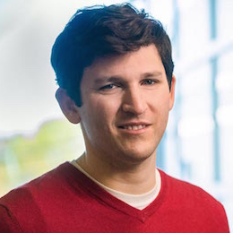

Jonathan Ullman
Associate Professor
Khoury College of Computer Sciences
Northeastern University
Khoury College of Computer Sciences
Northeastern University
Office: 623 ISEC (805 Columbus Ave / Boston, MA, 02118)
Email: jullman [at] ccs [dot] neu [dot] edu
Email: jullman [at] ccs [dot] neu [dot] edu

About Me
My research centers on the foundations of privacy for machine learning and statistics, in particular differential privacy and its surprising interplay with other topics in such as statistical validity, robustness, cryptography, and fairness. My background is in theoretical computer science, but increasingly my work spans algorithms, cryptography, machine learning, statistics, and security.
My research and teaching have been recognized with an NSF CAREER award and the Ruth and Joel Spira Outstanding Teaching Award.
I co-organize the Workshop on Theory and Practice of Differential Privacy, and differentialprivacy.org.
In Fall 2022, I am teaching CS 7800: Advanced Algorithms.
News
- 08-03-2022 Excited to be back at Northeastern after my sabbatical!
- 06-19-2022 Welcome to the family, Ezra Rainer Ullman!
{kind=link}
Students
I'm fortunate to work with an amazing group of students and postdocs. Currently I work with:- Maryam Aliakbarpour (Postdoc)
- Lydia Zakynthinou (PhD Student)
- Konstantina Bairaktari (PhD Student)
- John Abascal (PhD Student)
- Rose Silver (PhD Student)
- Sushant Agarwal (PhD Student)
- Stanley Wu (Undergraduate)